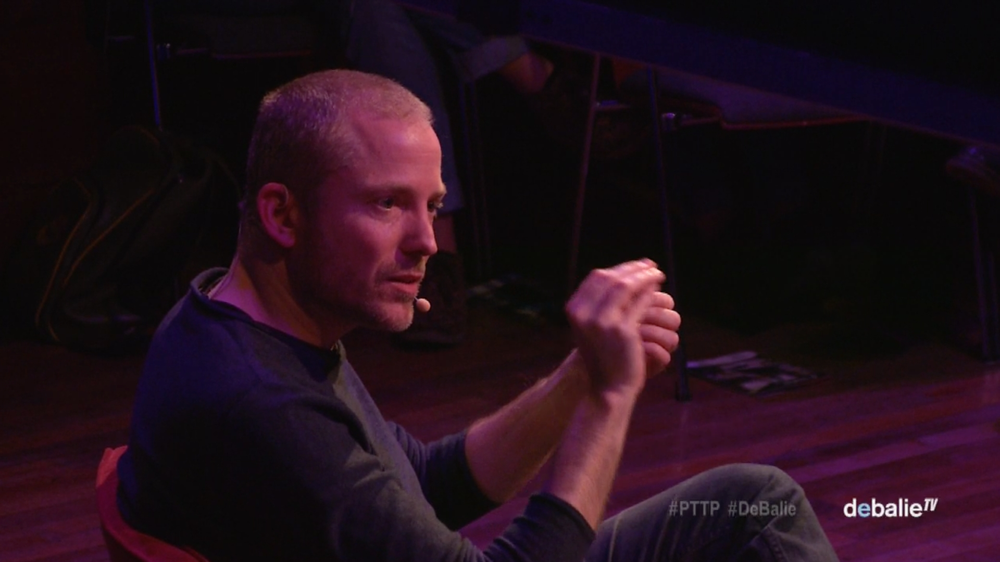
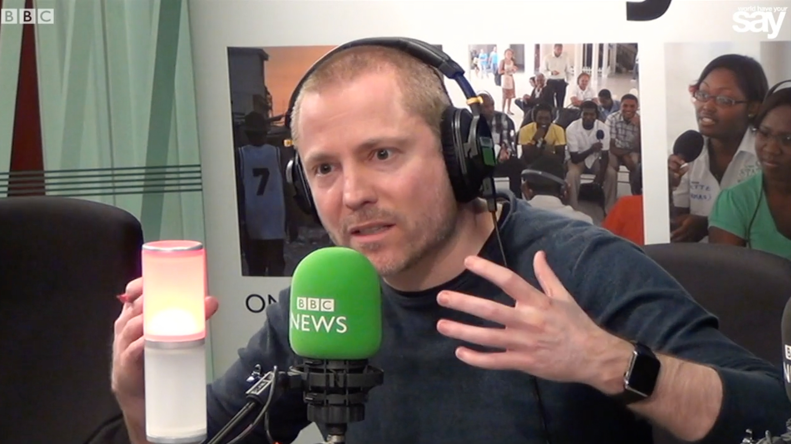

Videos

Ethical Design and Democracy
Aral at ‘Power To The People’ at De Balie in Amsterdam. January 2016.

The Nature of The Self in the Digital Age
When Aral was on BBC World Service: World Have Your Say, speaking about Apple, FBI & Encryption, the BBC made this short video. February 2016.

Internet As A Commons
Aral at the “Internet As A Commons” conference at the European Parliament. Brussels, Belgium. October 2015.


You can find the Summit Videos in the Summit Archive.